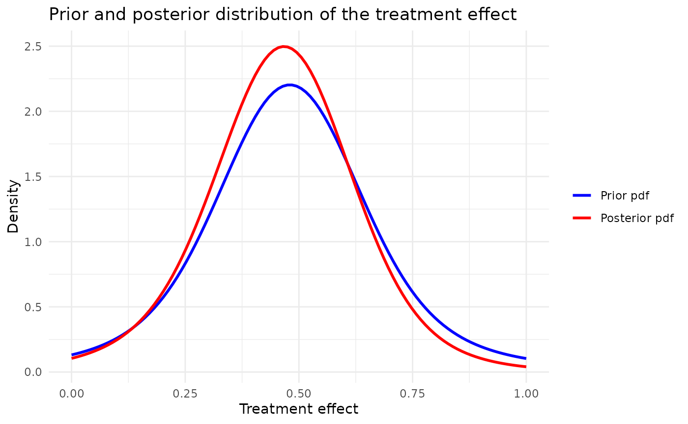
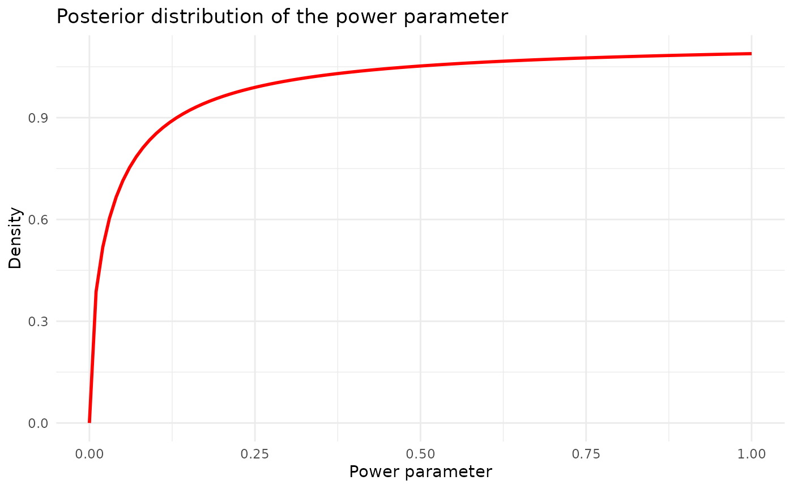
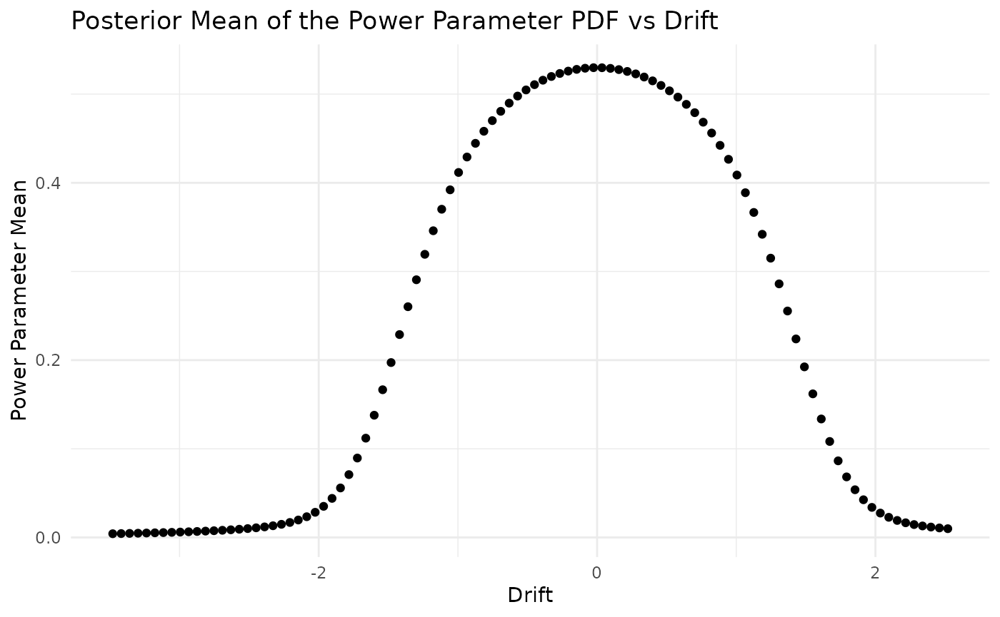
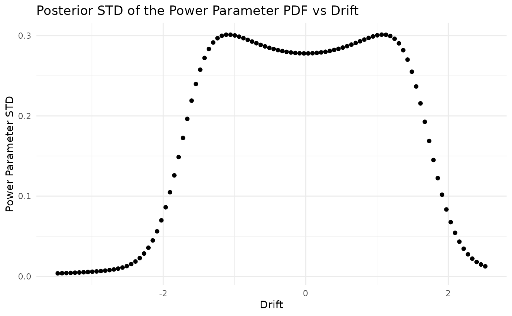

Normalized Power Prior : normal likelihood, beta prior on the power parameter, noninformative initial prior, known sampling variance
Tristan Fauvel, Quinten Health
2026-09-11
Source:vignettes/methods/NPP.Rmd
NPP.RmdIntroduction
The aim of this document is to illustrate the implementation of the Normalized Power Prior in the case where the treatment effect follows a normal distribution.
The derivation for the normalized power prior can be found in Pawel et al (2023)
With known standard error of the estimate , a Beta prior on the power parameter . This choice leads to the normalized power prior :
Combining this prior with the likelihood of the target study data produces a joint posterior for and , that is, from which a marginal posterior for can be obtained by integrating out , that is,
Load the Belimumab case study configuration
Load the simulation configuration and the Belimumab case study configuration from YAML files.
set.seed(42)
case_study_config <- yaml::yaml.load_file(system.file("conf/case_studies/belimumab.yml", package = "RBExT"))Create data objects
Create a source_data instance, where information about the source data is stored
source_data <- ObservedSourceData$new(case_study_config)Set the observed target data (in the paediatrics population)
target_data <- ObservedTargetData$new(treatment_effect_estimate = case_study_config$target$treatment_effect, treatment_effect_standard_error = case_study_config$target$standard_error, target_sample_size_per_arm = as.integer(case_study_config$target$total / 2), summary_measure_likelihood = case_study_config$summary_measure_likelihood)Create the model
Now, we define the model we want to use for inferring the treatment effect in the target study.
We reuse the code published in Pawel et al (2023). Marginal posterior densities are computed by numerical integration:
method <- "NPP"
# here, we choose the parameters so that the prior on the power parameter is Beta(1,1)
method_parameters <- list(
initial_prior = "noninformative",
power_parameter_mean = 0.5,
power_parameter_std = sqrt(1 / 12)
)
model <- Model$new()
model <- model$create(
case_study_config = case_study_config,
method = method,
method_parameters = method_parameters,
source_data = source_data
)Inference
# Perform Bayesian inference based on observed target data.
model$inference(target_data = target_data)## [1] "Success"
model$plot_pdfs(xmin = 0, xmax = 1, resolution = 100)
Posterior distribution of the power parameter:
model$plot_power_parameter_posterior_pdf(target_data)
## Power parameter as a function of drift
target_treatment_effect_values <- seq(-3, 3, length.out = 100)
drift <- target_treatment_effect_values - source_data$treatment_effect_estimate
posterior_power_parameter_means <- numeric(100)
posterior_power_parameter_std <- numeric(100)
for (i in 1:length(target_treatment_effect_values)) {
target_data$sample$treatment_effect_estimate <- target_treatment_effect_values[i]
model$inference(target_data)
posterior_power_parameter_means[i] <- model$posterior_parameters$power_parameter_mean
posterior_power_parameter_std[i] <- model$posterior_parameters$power_parameter_std
}
# Combine into a data frame
plot_data <- data.frame(
drift = drift,
target_treatment_effect = target_treatment_effect_values,
power_parameter_mean = posterior_power_parameter_means,
power_parameter_std = posterior_power_parameter_std
)
ggplot(plot_data, aes(x = drift, y = power_parameter_mean)) +
geom_point() +
# geom_vline(xintercept = source_data$treatment_effect_estimate, linetype = "dashed", color = "red", linewidth = 1, show.legend = TRUE) +
# geom_point(aes(x = source_data$treatment_effect_estimate, y = Inf, color = "Source Treatment Effect"), shape = "|", size = 5) +
# scale_color_manual(name = "", values = c("Source Treatment Effect" = "red")) +
labs(
title = "Posterior Mean of the Power Parameter PDF vs Drift",
x = "Drift",
y = "Power Parameter Mean"
) +
theme_minimal()
ggplot(plot_data, aes(x = drift, y = power_parameter_std)) +
geom_point() +
labs(
title = "Posterior STD of the Power Parameter PDF vs Drift",
x = "Drift",
y = "Power Parameter STD"
) +
theme_minimal()